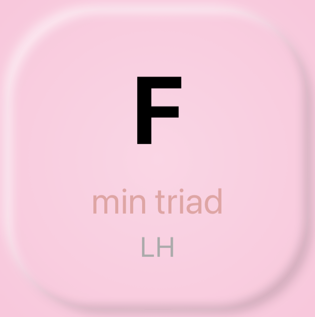
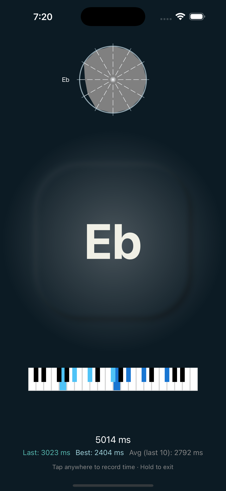
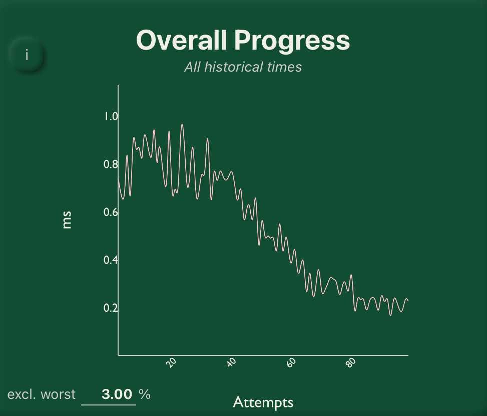

Data driven music practice
Is there a shortest path to proficiency?
Competency topology is irregular: fast at major 7ths, slow at half-diminished; comfortable with drop-2 voicings, uncertain on rootless shapes; etc.
ShedLab records and maps this data in real-time and generates practice sequences that target the frontier between mastered and not-yet-mastered material.
The sequences are generated by pathfinding for marks through real jazz literature.

ShedLab measures response latency across a huge symbol space and creates a competency topology, using the data to inform practice sequences.
Voicings are organized into domains—Major 7, Dominant 7, Altered Dominants, Quartal, etc.
Locked content unlocks as competency thresholds are met
Each practice attempt updates the latency model. Symbol selection is drawn from a weighted probability distribution
Judge yourself continuously, Pass/Fail

Track your progress over time. Filter by keys, qualities, inversions, or whatever you need

Built on spaced repetition research, motor learning theory, and jazz pedagogy literature.
Understand your student's weaknesses and strengths and create your own exercises
Rigorous speed training that respects expertise
Assumes harmonic literacy and targets execution, not conceptual learning
Provides data-driven insights and custom lesson planning